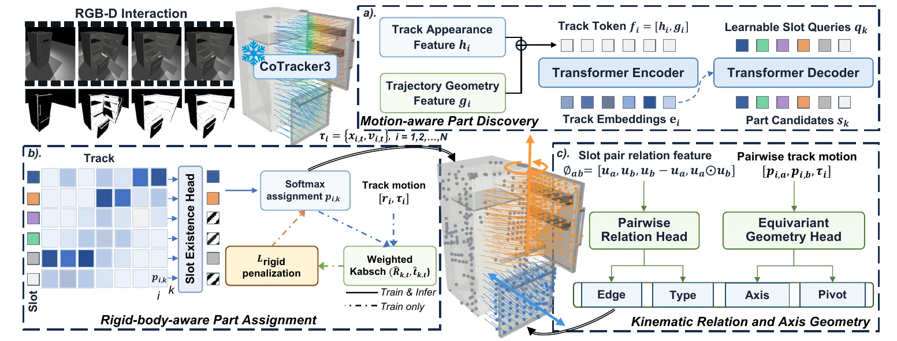
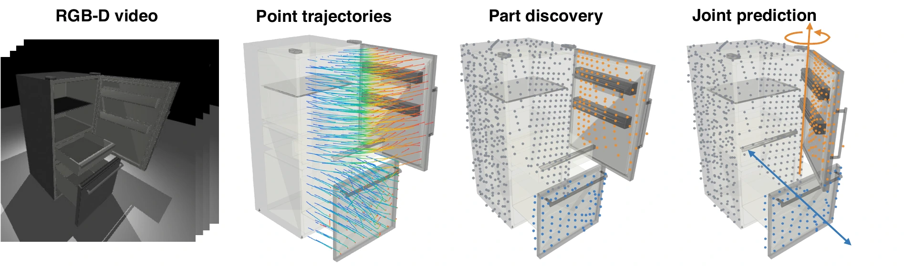

Track
CoTracker establishes persistent 2D correspondences, which calibrated depth lifts into metric 4D trajectories.
Motion-Centric Articulated Object Model Recovery from 2D Point Trackers
University of Cambridge
The idea
Points on the same rigid part move coherently. Relative trajectories between parts expose the constraints that connect them.
Understanding articulated objects is fundamental for robots to interact with the physical world, requiring accurate segmentation of object parts and their kinematic relations. Existing reconstruction-first approaches can underuse temporal evidence and couple articulation estimation to errors in geometry reconstruction and correspondence.
Track2Art is a motion-centric framework that recovers structured articulated object models from RGB-D interaction videos. A pretrained point tracker supplies feature-rich 4D trajectories; a motion-aware slot model groups them into rigid parts; pairwise and rotation-equivariant geometry modules recover the directed kinematic graph, joint types, and joint geometry.
Overview
Persistent point motion stays intact from observation to articulation reasoning.

CoTracker establishes persistent 2D correspondences, which calibrated depth lifts into metric 4D trajectories.
A motion-aware set predictor groups appearance and trajectory geometry into a variable number of rigid parts.
Pairwise relation and equivariant geometry heads recover directed joints, types, axes, and pivot points.
Architecture

Interactive explorer
Switch between RGB, calibrated RGB-D, temporal 4D point cloud, and Track2Art output. Select a part to reveal its CoTracker flow.
Drag rotate · Control + drag pan · Scroll zoom · click a part to highlight
What it recovers
A variable number of motion-consistent object parts, without supplying the part count at inference.
Parent-child connectivity and joint type for every active ordered part pair.
Rotation-equivariant axes and constrained pivot estimates in metric 3D coordinates.
Paper
@article{li_track2art,
title = {Track2Art: Motion-Centric Articulated Object Model Recovery from 2D Point Trackers},
author = {Li, Xiaotong and Jing, Yixiong and Wang, Guangming and Sheil, Brian},
journal = {Preprint}
}